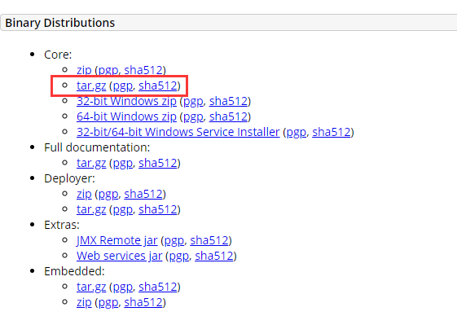
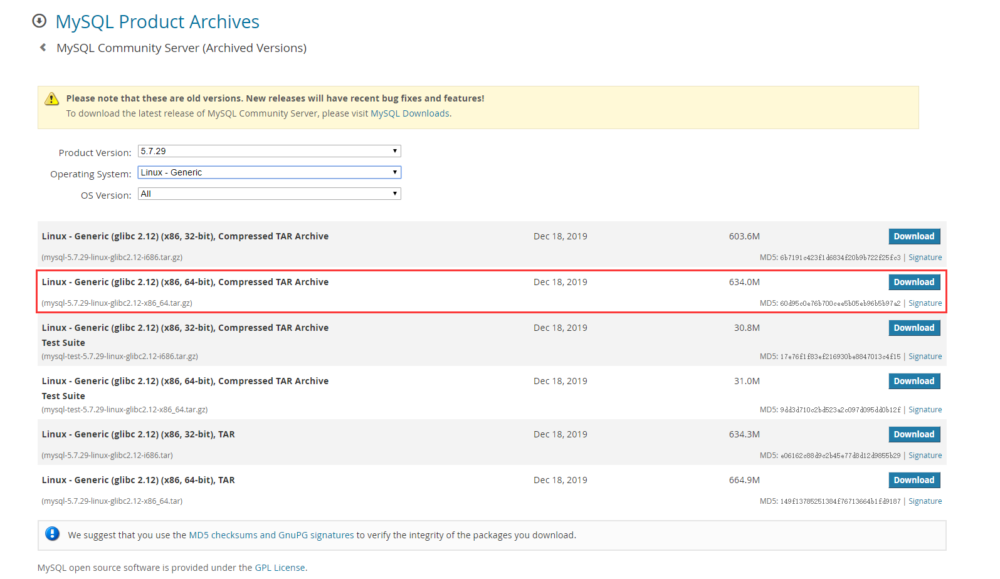

安装 jdk1.8
（1）前往 Oracle 官网，选择下载 xxx-linux-xxx.tar.gz 压缩包到本地（以 jdk-8u152-linux-x64.tar.gz 为例）
（2）使用 filezilla 将下载的 jdk 压缩包上传至 Linux 系统下（/home/java/jdk-8u152-linux-x64.tar.gz）
（3）解压 jdk 到当前目录
1 | tar -zxvf jdk-8u152-linux-x64.tar.gz |
（4）配置 jdk 的环境变量
1 | vi /etc/profile |
（5）执行上述文件，使其生效
1 | source /etc/profile |
（6）查看 java 版本，验证是否安装成功
1 | java -version |
安装 tomcat8.5
（1）前往 Apache Tomcat，选择下载 Core - tar.gz 压缩包到本地（以 apache-tomcat-8.5.24.tar.gz 为例），如下图

（2）使用 filezilla 将下载的 tomcat 压缩包上传至 Linux 系统下（/home/tomcat/apache-tomcat-8.5.24.tar.gz）
（3）解压 tomcat 到当前目录
1 | tar -zxvf apache-tomcat-8.5.24.tar.gz |
（4）启动和关闭 tomcat
1 | 启动 tomcat |
安装 mysql5.7
（1）前往 MySQL官网，选择如下图所示的 mysql 版本下载到本地（以 mysql-5.7.29-linux-glibc2.12-x86_64.tar.gz 为例）

（2）使用 filezilla 将下载的 mysql 压缩包上传至 Linux 系统下（/home/mysql/mysql-5.7.29-linux-glibc2.12-x86_64.tar.gz）
（3）解压 mysql 到 /usr/local/mysql 目录下
1 | tar -zxvf mysql-5.7.29-linux-glibc2.12-x86_64.tar.gz -C /usr/local/mysql/ |
（4）添加系统组和用户
1 | groupadd mysql |
（5）修改 mysql 目录拥有者为 mysql 用户
1 | cd /usr/local/mysql |
（6）数据库初始化，并且保存最后生成的密码
1 | cd /usr/local/mysql/bin |
（7）修改 data 目录拥有者为 mysql 用户
1 | chown -R mysql:mysql data |
（8）复制启动文件到服务文件夹
1 | cp support-files/mysql.server /etc/init.d/mysql |
（9）启动 mysql 服务，并设置开机自启动
1 | service mysql start |
（10）添加 mysql 软连接
1 | ln -s /usr/local/mysql/bin/mysql /usr/local/bin/mysql |
（11）登录 mysql，密码是在第六步生成的
1 | mysql -uroot -p |
（12）修改 root 密码，并且开发权限使用 navicat 可以连接 mysql
1 | 修改root密码 |

如果觉得这篇博客对您有所帮助，欢迎收藏分享。如果觉得这篇博客有不足的地方，欢迎评论交流。如果博客无意侵犯了您的版权，请与作者联系以将其删除。谢谢 ！

...
...